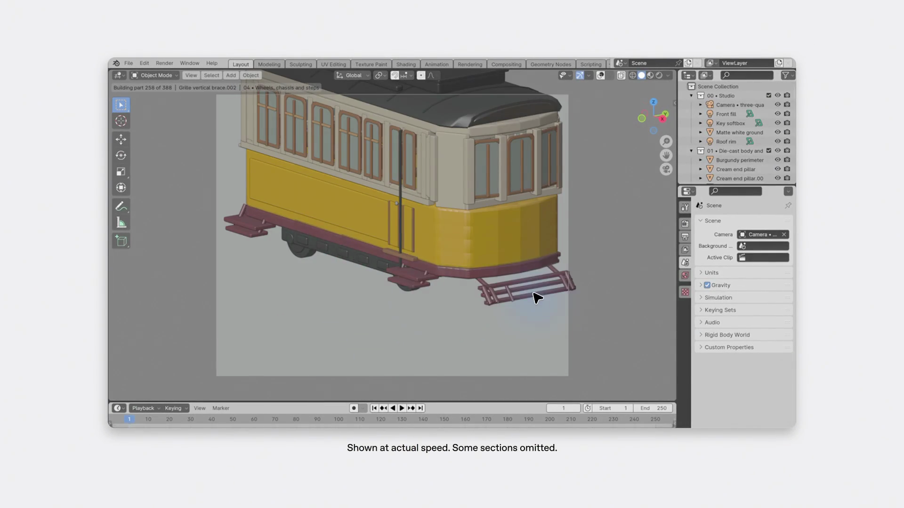
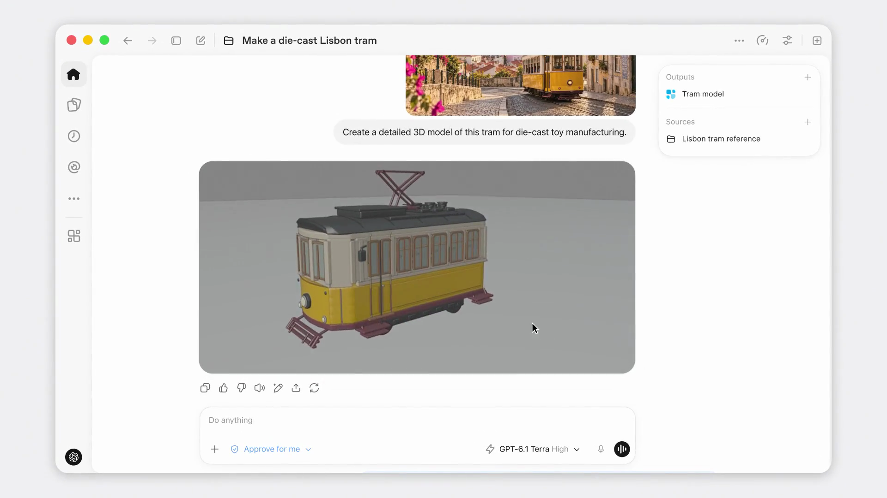
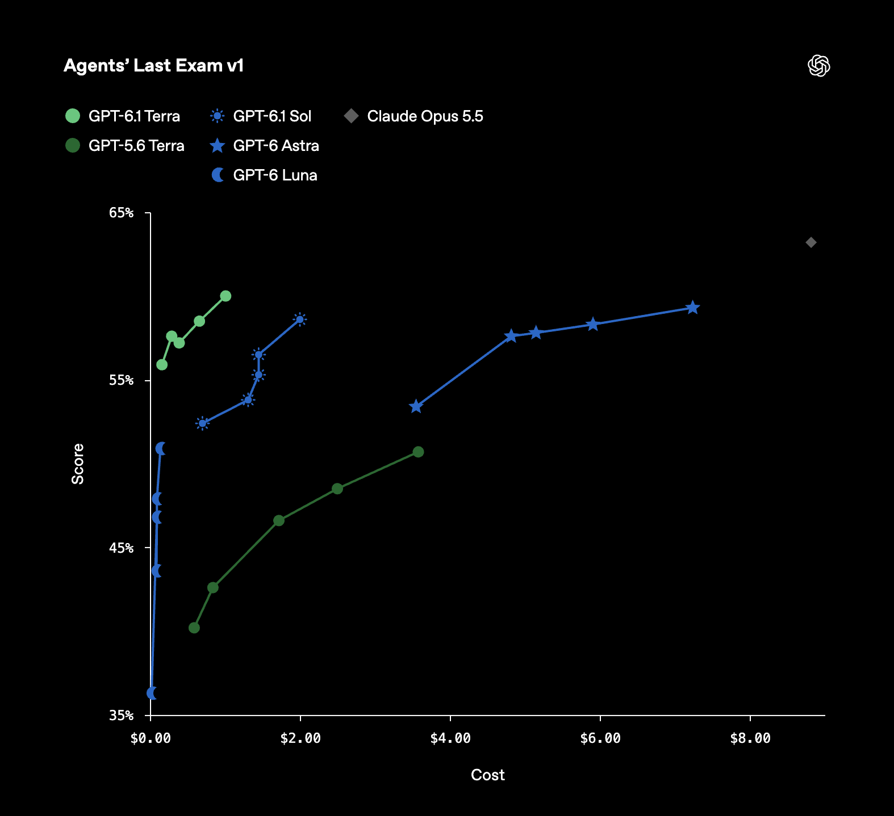
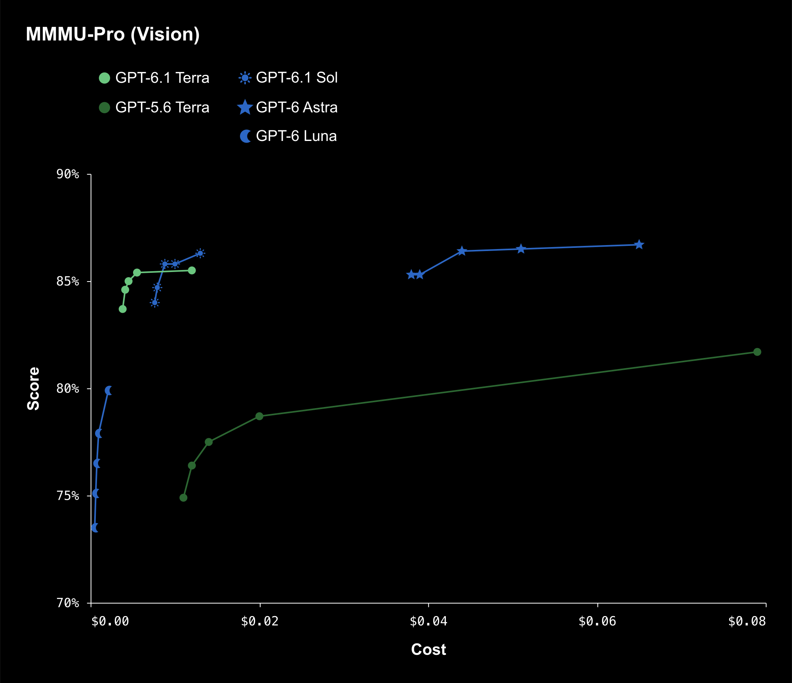
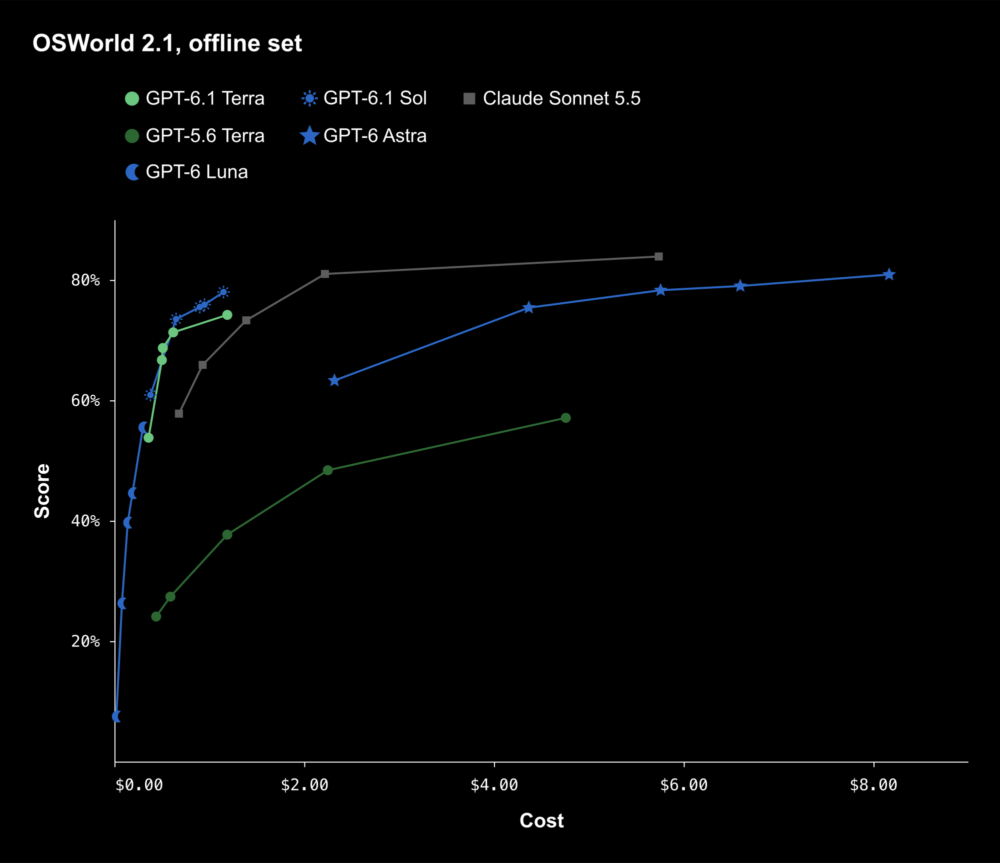
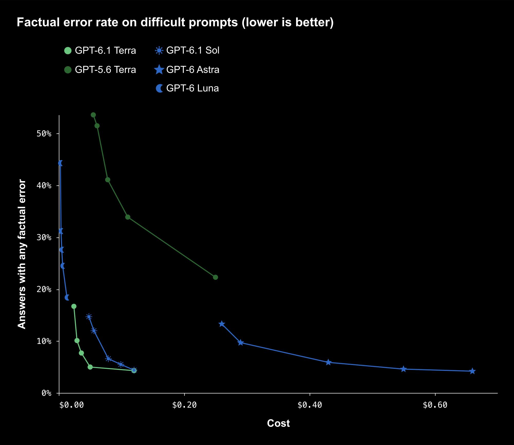
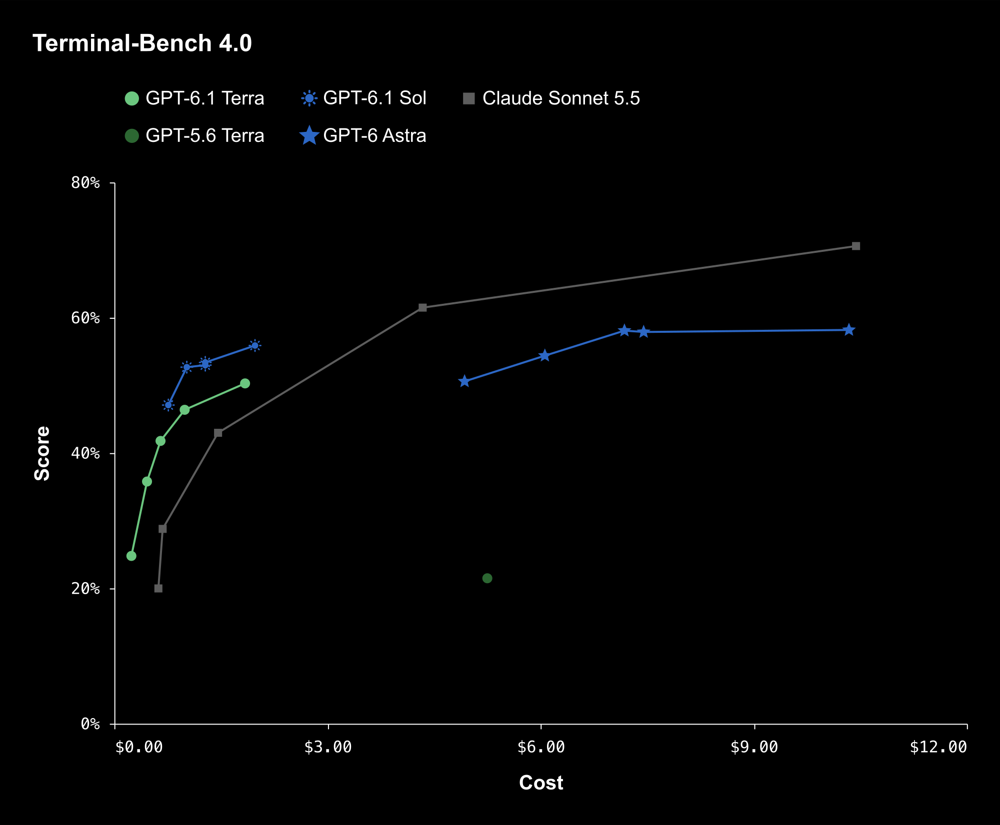
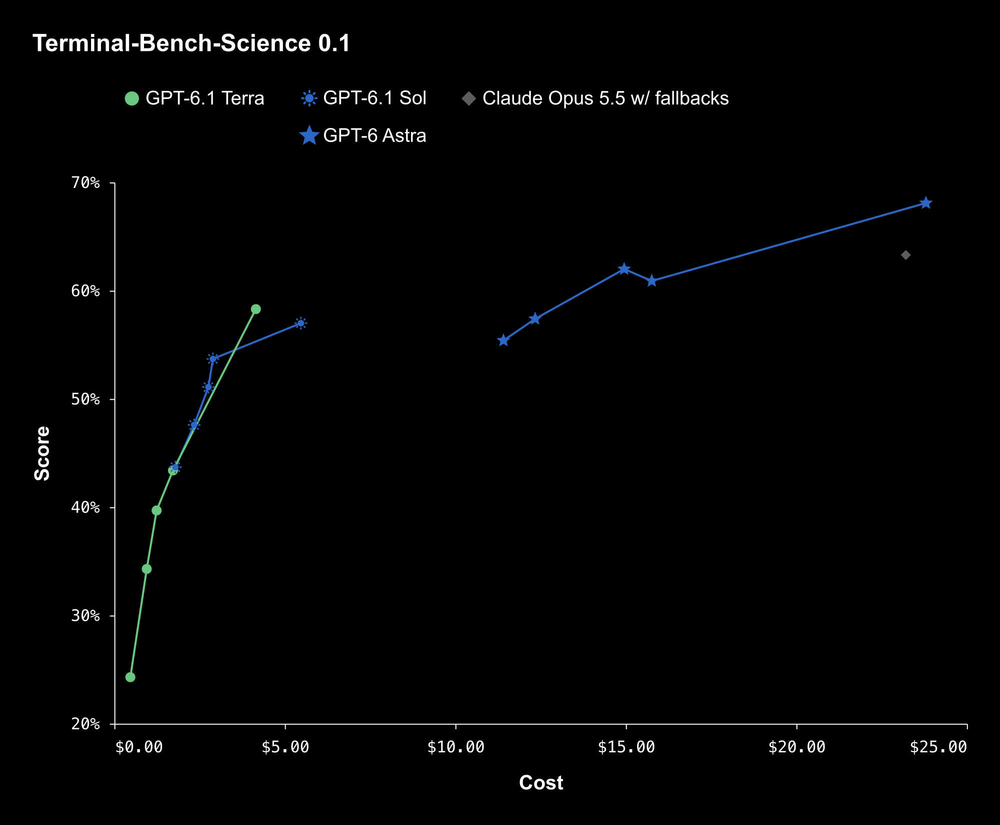
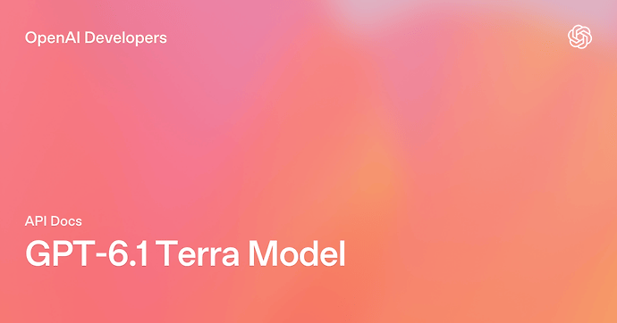

图 1｜GPT-6.1 Terra 官方发布封面。
一家公司每天会收到不少发票。
有人要打开邮件，下载附件，找到供应商名称、日期和金额，再把这些信息填进财务软件。如果发票格式不统一，或者有一张扫描得不清楚，还得停下来核对。
这不是一项需要每次都从头发明解决方案的工作，却很容易占掉大量时间。对于希望把 AI 用进日常流程的公司来说，这也是一个很自然的任务：能不能让 AI 看懂发票、操作软件、填好信息，再把需要确认的地方交给人？
OpenAI 在介绍新模型 GPT-6.1 Terra 时，就举了类似的例子。
这次发布的重点，并不是再推出一个“什么都要做到最强”的模型。OpenAI 更强调的是另一组组合：视觉理解、电脑操作和自然写作，以及完成这些工作所需的速度与成本。
价格是其中一个很醒目的变化。GPT-6.1 Terra 的标准 API 价格，相比 GPT-5.6 Terra 和 GPT-6.1 Sol 都降低了 50%。
如果模型调用更便宜了，AI 承担大量重复任务的账就有可能重新算一遍。但单价只是第一步。让 AI 真正处理一批发票，还要看它能否认对信息、填对位置，遇到不确定的情况会不会停下来，以及人最后需要花多少时间检查。
AI 的价格降了，完成一件工作的成本究竟能降多少？
GPT-6.1 Terra 给这个问题提供了一个值得关注的新样本。
一个更适合大量日常任务的模型
如果把 OpenAI 的模型产品线想象成一个团队，Astra 和 Sol 更像是负责复杂任务的成员，Terra 则被安排去处理大量需要速度、成本和能力兼顾的工作。
这个分工当然不是说 Terra 只能做简单题。OpenAI 为它展示的任务，从起草方案、理解技术图纸，到填写表格、编辑视频，都需要模型先看懂材料，再做出一连串动作。
它主要强调三类能力。
第一类是看。模型需要理解照片、截图、图纸等视觉信息，识别其中与任务有关的细节。比如，面对一张商品照片，找到与之对应的商品目录；面对一张技术图纸，理解里面的结构和标注。
第二类是写。它可以起草和修改文本，例如根据已有信息整理提案、改写说明或生成一份工作材料。对于经常处理邮件、会议纪要和方案的人来说，这可能是最容易开始尝试的部分。
第三类是做。这里的“做”指模型在产品提供工具和权限的情况下，观察电脑界面、选择操作、输入信息，并根据操作后的界面继续下一步。
这三类能力放在一起，才比较接近 OpenAI 想讲的故事。
看懂发票，只是第一步。要把发票录入系统，模型还得找到软件里的表单，理解字段对应关系，把信息填进去，最后检查结果。文字、图片和操作并不是三项互不相干的表演，它们可能出现在同一个工作流程里。
OpenAI 表示，GPT-6.1 Terra 已面向 Plus、Pro、Enterprise 和 Edu 用户开放，可以在 ChatGPT Work 和 Codex 中使用。开发者则可以通过 API 调用，模型名称为 gpt-6.1-terra。
对于最复杂的编程任务，OpenAI 仍然推荐 GPT-6.1 Sol 或 GPT-6 Astra。换句话说，Terra 的位置并不是把产品线里其他模型全部替换掉，而是在更多日常工作里提供一个更低成本的选择。
官方发布视频给了一个直观的演示：用户上传一张里斯本电车的照片，希望据此制作细致的三维模型，用于压铸玩具制造。输入只有一张图片和一句要求，后续交付却需要实际操作建模软件。
图 2｜用户提供电车照片，希望制作适用于压铸玩具的细致三维模型。官方发布视频画面。
先从熟悉的工作开始：写邮件、整理材料
大多数人第一次尝试新模型，不会直接让它操作财务软件。
更常见的情况是，手边有一份会议记录，希望 AI 帮忙写一封跟进邮件。会议上讨论了三个问题，确定了两个负责人，还留下一个没有定下来的时间。邮件需要写清楚谁负责什么，同时提醒团队下一次确认。
这时，衡量模型的标准并不复杂。
它写得是否通顺？语气是否合适？有没有把尚未确定的时间写成已经确定？有没有漏掉真正需要行动的人？
一封邮件可能只有几百字，但其中有几项关键信息不能丢。模型哪怕把开头写得再自然，如果把“预计下周完成”改成了“下周一定完成”，读起来顺滑的代价也可能是后续沟通出错。
OpenAI 将更清晰、自然的写作列为 Terra 的特点之一。对于邮件、文案修改、材料整理等任务，用户可以先拿它处理几份自己熟悉的内容，看输出是否达到要求。
接下来，任务可以逐渐增加难度。
一份会议记录整理成邮件，是一次相对直接的改写；三次会议的纪要整理成项目进展，就要求模型识别哪些决定发生了变化；如果几份材料对同一件事的说法互相冲突，还需要模型把分歧找出来，而不是把它们揉成一个听起来合理的版本。
以项目上线时间为例。第一次会议记录写着“预计月底上线”，第二次写着“测试延期一周”，第三次又说“保留月底目标，但部分功能可能推迟”。
一份有用的总结，不应该简单地写成“项目将在月底上线”。它至少要保留目标仍是月底、测试发生延期，以及部分功能可能晚交付这几个条件。否则，读者拿到的是一句容易理解、却可能误导决策的话。
任务走到这一步，用户就可以把 Terra 和其他候选模型放在一起比较：给它们同样的材料、同样的要求，看看谁抓住了变化，谁漏掉了条件，哪份结果需要修改得更少。
GPT-6.1 Terra 的模型规格提供了较长的上下文窗口，可以容纳大量材料。但能把材料放进一次请求，不代表模型一定会在每一处都找对细节。长文档处理的质量，最终还要靠它对具体问题的回答来检验。
对于日常写作而言，模型是否“够用”，常常不是看它能不能写出一段漂亮的话，而是看你拿到结果后，是否愿意放心地继续往下做。
从看懂屏幕，到替你操作电脑
写一封邮件，AI 交付的主要是一段文字。
操作电脑则不同。模型需要根据当前界面决定下一步，做完一个动作，再观察界面发生了什么。遇到弹窗、错误提示或页面变化时，它还得重新判断，而不是沿着最初的计划一路点下去。
回到开头的发票例子。假设一家公司希望把发票信息录入财务系统，一个可能的流程是这样的：
首先，模型读取发票，提取供应商、日期、金额等字段。如果附件中有多张票据，还需要确认每一张对应的是哪笔记录。
接着，它进入财务软件，找到新增记录的位置，理解界面中的字段。发票上的“开票日期”，不一定应该填进系统里所有名为“日期”的位置；币种、税额和付款状态，也可能分布在不同的输入框中。
然后，模型逐项填写。填完之后，还需要回过头检查：数字是否少了一位？供应商名称是否选错？系统是否提示存在重复记录？
如果信息缺失，或者图片模糊到无法确认金额，一个更合适的处理方式是把问题标出来，请人查看。提交、付款或其他后果较大的操作，则可以安排明确的人工确认点。
这个流程是对任务的拆解，并不是一次已经公开验证过的 Terra 财务系统实测。它说明的是：看起来一句“把发票录进去”，背后包含了识别、判断、操作和检查。
也正是在这里，视觉理解和电脑操作开始发生关系。
过去，一项自动化任务如果有稳定的接口和清晰的数据格式，程序可以直接读取字段、调用接口。现实中的很多工作没有这么整齐：附件可能是扫描件，软件页面可能改版，不同供应商的单据布局也可能不一样。
一个具备视觉理解能力、又能使用电脑工具的 Agent，有机会处理这些变化。但模型能力之外，还需要产品为它提供合适的工具、权限和工作环境。模型本身不会凭空获得访问企业系统的权利，也不意味着所有应用都能自动接入。
OpenAI 在发布材料中展示的专业任务，就包括根据建筑图纸创建三维模型，以及逐镜头检查动画影片、为修复团队制作带时间码的记录。
这两项工作与发票录入相差很远，却有一个共同点：视觉信息只是工作的输入，真正要交付的是后续产物。
在图纸任务中，模型需要理解图纸里的结构，再通过软件把它转成模型；在影片检查中，模型需要识别镜头变化，记录位置，并整理成团队能够使用的材料。它不只是回答“我看到了什么”，还要把看到的内容放进一项任务中。
发布视频则展示了前面那辆电车的后续：画面进入建模软件，电车逐渐有了车身、车窗、底盘与受电弓，最后在 ChatGPT Work 中展示模型产物。视频省略了部分动作，能够说明官方展示的任务路径，不能据此推算完整执行时间。

图 3｜官方演示中的建模软件画面；视频注明按实际速度展示、部分片段省略。

图 4｜演示回到 ChatGPT Work，显示电车模型和产物入口。
这也是 Agent 体验与普通聊天最大的区别之一。
聊天时，模型的一次回答不理想，用户可以再追问；操作任务中，一个不准确的判断可能影响后续步骤。比如，模型误把一笔金额填到错误字段，后面每一步都可能在这个错误的基础上继续。
因此，一个实际可用的 Agent 产品，除了让模型“能操作”，还要让用户知道它正在做什么、能够在哪里介入，以及操作失败后如何处理。
模型更擅长理解界面，是这条链上的进步；任务能否放心交出去，还取决于整个产品如何安排权限、确认与纠错。
测试成绩：它在哪些地方进步了？
为了展示 GPT-6.1 Terra 的变化，OpenAI 公布了多项测试。比起把所有榜单排成一长串，更有意思的是看看它们分别试图回答什么问题。
专业任务：完成得更多，也更便宜
Agents’ Last Exam 测试的是 AI Agent 完成专业电脑任务的能力，包含前面提到的图纸建模和影片记录等工作。
OpenAI 公布的结果显示，在中等推理强度下，GPT-6.1 Terra 比 GPT-5.6 Terra 的得分高出 15 个百分点，而单次任务成本约为后者的三分之一。
在这组测试的比较中，OpenAI 还表示，Terra 达到了 GPT-6 Astra 相当的表现，而 Token 单价为后者的十分之一。
这组数字为什么值得看？因为它同时包含了完成效果和成本。如果一个新模型只是得分更高，但每次任务贵很多，对于要处理大量工作的团队来说，未必是更合适的选择；如果模型更便宜，却经常做不出来，同样难以直接投入使用。
OpenAI 还称，在这一测试语境中，Terra 完成任务的速度超过 GPT-6 Astra 和 GPT-6.1 Sol 的三倍。
这里的速度指测试任务的完成速度，不等于用户在任何场景下都能获得三倍加速。实际等待时间还会受到任务复杂度、推理设置、工具调用和所使用产品的影响。

图 5｜Agents’ Last Exam v1：纵轴为成绩，横轴为任务成本；不同点对应不同推理设置。OpenAI 公布结果。
视觉理解和桌面操作，是两道不同的题
OpenAI 还公布了 MMMU-Pro 和 OSWorld 2.1 的结果。
MMMU-Pro 关注视觉推理。按照 OpenAI 的数据，GPT-6.1 Terra 在各档推理强度下都超过上一代，并以更低成本取得接近 Astra 和 Sol 的成绩。

图 6｜MMMU-Pro 视觉推理测试，成绩与成本一并呈现。按官网交互图原始数据和配置导出。
OSWorld 2.1 则关注 AI Agent 如何使用桌面应用完成多步骤任务。OpenAI 表示，Terra 在中等推理强度下，就超过了 GPT-5.6 Terra 的最佳成绩，同时降低了单次任务成本。
这两项测试有联系，但测试对象并不相同。
看懂一张界面截图，不代表一定能在软件里完成任务；会点击几个按钮，也不代表能准确理解复杂图纸。一个真实工作流程可能同时需要这两项能力，所以两项测试都提供了参考，但不能把它们合并成一个包打天下的“电脑操作分数”。

图 7｜OSWorld 2.1 离线集：桌面应用操作测试。按官网交互图原始数据和配置导出。
事实准确率和编程，也有明显变化
除了视觉和操作，OpenAI 还公布了一组事实准确率数据。
在其内部一项专门使用容易诱发错误的提示进行的测试中，低推理强度下，GPT-5.6 Terra 的错误率为 53.6%，GPT-6.1 Terra 降至 16.7%。在最高推理强度下，新模型的错误率进一步降至 4.3%。

图 8｜OpenAI 内部事实性测试，错误率越低越好；不代表日常生产环境错误率。按官网交互图配置导出。
这项测试针对的是特定设计的问题，不能把 16.7% 理解成用户日常每百次提问就会出现多少错误。它说明的是：在 OpenAI 公布的这组困难测试中，新旧模型表现出现了明显差异。
对于需要整理资料或引用事实的工作，这样的进步有意义。模型编出一个不存在的日期，或者把两份文件中的数字混在一起，后续写作就会从错误信息出发。错误更少，可以减少一部分检查压力；但涉及合同条款、财务数字等内容时，关键事实仍然需要回到原始材料核对。
编程方面，OpenAI 在 Terminal-Bench 4.0 中公布的成绩也有明显提升。该测试衡量编程 Agent 使用命令行解决问题的能力。最高推理强度下，GPT-6.1 Terra 解决了 50.3% 的任务；GPT-5.6 Terra 的公开成绩为 21.5%。

图 9｜Terminal-Bench 4.0：编程 Agent 的命令行任务测试。按官网交互图原始数据和配置导出。
这意味着新模型在这项测试中的成绩超过上一代的两倍。但编程任务的范围很广，修复一个页面布局问题、理解一套大型代码库、设计一项复杂功能，对模型的要求并不相同。OpenAI 也明确表示，最复杂的编程任务仍适合使用 Sol 或 Astra。
另外，在 Terminal-Bench-Science 0.1 科学研究编程测试中，OpenAI 表示 Terra 在最高推理强度下超过了 Sol。测试任务包括使用代码分析延时视频中的细胞分裂等工作。

图 10｜Terminal-Bench-Science 0.1；保留 Claude Opus 5.5 的“w/ fallbacks”条件。按官网交互图配置导出。
这些结果呈现出的图景并不复杂：Terra 在多项官方测试中比上一代更强，同时被设计为更低成本的选择。至于某个团队手里的具体工作能提高多少、节省多少，还需要结合实际任务比较。
独立评测机构 Artificial Analysis 给出的综合智力指数中，GPT-6.1 Terra 的最高推理档获得 48 分。这提供了官方测试之外的一组参照，但综合分数也无法替代具体任务结果：写邮件、操作桌面软件和处理专业图纸，各自需要的能力并不完全一样。
价格低一半，完成一件事就能省一半吗？

图 11｜GPT-6.1 Terra 官方 API 文档题图；以下价格为标准 API 计费。
GPT-6.1 Terra 的标准 API 定价如下：
| 计费项目 | 每百万 Token 价格 |
|---|---|
| 输入 | 1 美元 |
| 缓存输入 | 0.05 美元 |
| 输出 | 5 美元 |
可以把 Token 粗略理解为模型处理文本时使用的计量单位。用户交给模型的材料会产生输入量，模型生成的内容会产生输出量；符合缓存条件的重复输入，则按缓存输入价格计费。
OpenAI 表示，这组标准 API 价格比 GPT-5.6 Terra 和 GPT-6.1 Sol 低 50%。
为了看看这个价格怎样进入实际工作，可以做一道简单的假设题。
假设一家公司用 API 处理一批材料，每次任务输入 10 万 Token，模型输出 1 万 Token，并且这次输入没有使用缓存。按照 Terra 的标准价格：
- 输入费用：10 万 ÷ 100 万 × 1 美元，等于 0.10 美元；
- 输出费用：1 万 ÷ 100 万 × 5 美元，等于 0.05 美元；
- 两项相加，模型调用费用为 0.15 美元。
如果这是一项需要反复执行的工作，单次差价乘上几千次、几万次，确实可能影响预算。
但这个例子只计算了一次假设调用的输入和输出。实际 Agent 任务往往不止调用一次模型：它可能先读材料，再查看页面，操作后再观察结果，遇到错误还要尝试其他方法。每增加一轮，输入、输出或工具调用都可能增加。
假设一个任务第一次没有填对，需要重新读取页面、检查字段，再进行一次修正，那么“完成任务”的费用就不再只是第一次调用的费用。如果最终还需要人工逐条复核，人的时间也会进入整个流程的成本。
这不意味着低价格没有价值。恰恰相反，价格下降可能让过去不划算的自动化工作开始值得尝试。只是当两款模型的成功率、操作轮次和结果质量不同时，单价降了 50%，不等于每个团队的整项工作成本都会精确下降 50%。
比较时，可以把问题改成：完成同样一批工作，并达到同样的质量要求，各自需要多少调用、多少等待时间和多少人工处理？
对于使用 API 的开发者来说，这些会直接影响账单和产品成本。对于使用 ChatGPT Work 或 Codex 的订阅用户，关注点则不同：需要看套餐额度能覆盖多少工作、任务等待多久，以及输出需要修改多少。
OpenAI 表示，在相同使用额度下，Terra 可以完成比 GPT-5.6 Terra 更多的任务，相比 Sol 和 Astra 的额度使用效率提升更加明显。但 API 的每百万 Token 单价，并不能直接换算成订阅用户每次任务的费用。
到底怎么选？把手头的工作拿来比一比
看完发布会和测试图表，真正需要决定的是：自己的工作，适合用哪个模型？
可以从几类常见任务开始。
写邮件、改文案、整理会议记录
这类任务通常容易准备样本，也容易发现明显遗漏。可以先用 Terra 跑几份熟悉的材料，检查语气、格式和关键事实。
如果结果已经满足要求，就没有必要仅仅因为模型定位更高而为每一次改写切换模型。如果任务涉及互相矛盾的资料、复杂的判断依据，或者内容会影响重要决策，再与 Sol、Astra 等候选模型对照，会更有意义。
看图片、识别商品、理解图纸
先挑选几张有代表性的图片：清晰的、模糊的、版式不同的、包含容易混淆细节的。
比如识别商品时，除了看名称是否正确，还要看模型有没有区分相似包装、规格和型号。如果图片本身无法看清，模型有没有把不确定的地方标出来，也很重要。
技术图纸则可能涉及尺寸、结构和标注。模型看懂大致内容，与正确处理关键尺寸，是两个不同层次的要求。后者需要用任务中真正重要的细节来检查。
填表、跨界面操作
可以先从结果容易检查的流程开始，例如把一组测试数据填入表单，观察模型如何处理正常输入、缺失字段和页面提示。
如果流程涉及提交、删除、付款或对外发送信息，需要在关键步骤设置合适的确认方式。自动化省下的时间，不应该靠事后花更多时间寻找错误来抵消。
大批量重复工作
批量任务最容易让低单价的优势显现，也最容易放大偶发错误。
假设一项工作每天只执行三次，多花几秒或多检查几条记录，影响可能不大；如果每天执行数万次，即使错误比例不高，也可能积累成大量需要处理的异常。团队需要同时记录成功率、重试次数和人工复核量，才能看清节省发生在哪里。
一个简单的测试办法是：从真实工作中选取一小批有代表性的任务，给候选模型相同的材料、工具和要求，再按照同一标准检查结果。
有的任务只要完成得准确、格式正确就够了；有的任务需要更好的分析质量；还有的任务必须保留人工确认。标准确定以后，再比较各模型的速度和成本，结果会比只看单价更有参考价值。
更便宜的 AI，正在进入更多工作流程
GPT-6.1 Terra 的发布，让 OpenAI 的模型分工变得更清楚了。
在需要处理大量视觉、文字和电脑操作任务的场景中，Terra 提供了一个价格更低、速度更快，并且在多项官方测试中比上一代更强的选择。
对于开发者来说，这可能意味着更多原本因成本而犹豫的功能，可以拿出来重新测试。对于日常使用 AI 的人来说，也多了一个值得尝试的模型：写材料时不妨先试试它，处理图片或操作软件时，也可以看看它能否达到自己的要求。
回到那一批发票。如果 AI 读取得准、填得对，遇到疑问会标记出来，最后只需要人花少量时间检查，那么模型价格下降带来的收益就可能很直接。
但如果它反复填错金额、在页面里迷路，或者每处理一张都要有人从头盯到尾，那么这项工作是否划算，就得把返工和检查一起算进去。
模型便宜了，值得交给它尝试的工作会变多；一项工作究竟该交给谁，答案仍然藏在质量、时间和总成本里。